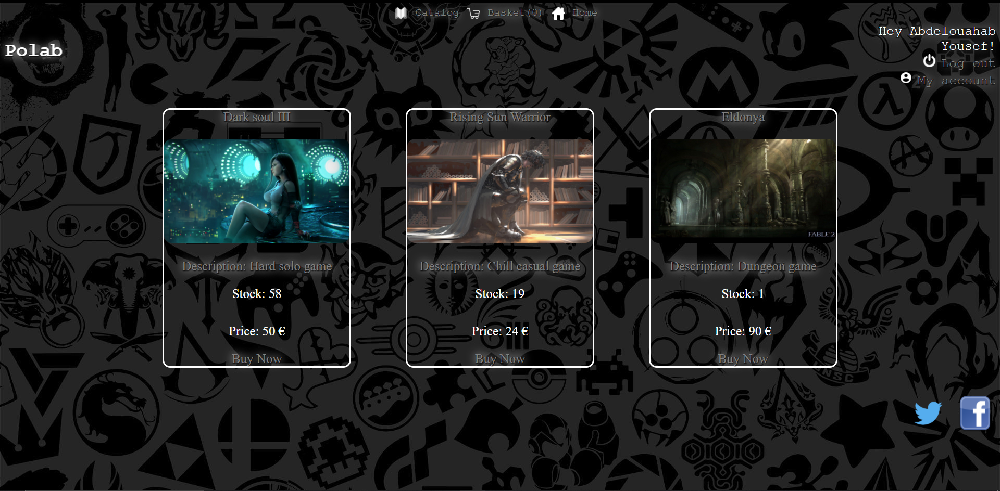
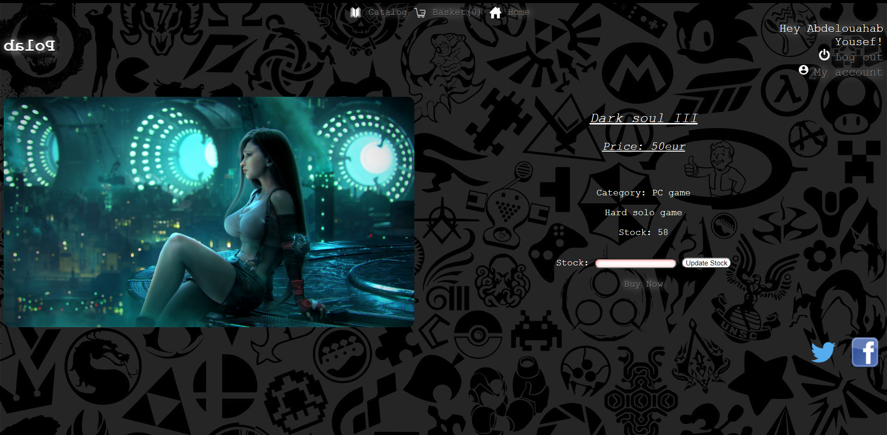

Bien que le côté esthétique d'un site m'attirait peu au début, j'ai découvert le plaisir de créer quelque chose de propre et visuellement attrayant.
J'ai réussi à intégrer quelques animations au site ainsi qu'un design sobre qui nous as paru adéquat.
Ce fut mon premier projet web et la première fois que j'ai vraiment travaillé sur le design d'un site

